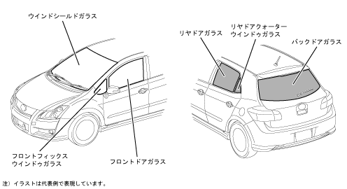

| Window Glass |
| ● |
The windshield glass uses high sound insulation glass, which has a sound insulating layer of special resin between the interlayers to suppress the coincidence phenomenon*
1and thereby reduces noise entering the cabin, ensuring excellent sound insulation performance.
|
| ● |
"Green tempered UV cut glass*
2", which is heat-absorbing glass with an added ultraviolet-cutting component, has been provided for the front door glass, front fixed window glass, rear door glass and rear door quarter window glass depending on the specifications. The front door glass has a water-repellent function to ensure visibility when driving in rain, etc.
|
| ● |
"Privacy glass (dark gray)*
3", which makes the cabin difficult to see from behind the vehicle to protect privacy, has been adopted for the rear door glass, rear door quarter window glass and back door glass, depending on the specifications.
|
| HINT |
 |
 Water-repellent Front Door Glass Water-repellent Front Door Glass
|
| Water-repellent Glass: Handling Precautions
|